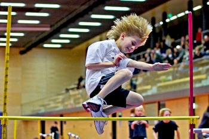

NIKOLAUSSPORTFEST AM MONTAG, 06.12.

Der Recklinghäuser LC lädt ein zum traditionellen
Nikolaussportfest
am
Mo, 06.12.2010
in die
Vestische Arena Alfons Schütt
. Hier werden sich zwischen 17:00 und 20:00 Uhr die Kids der Jahrgänge 1998 bis 2004 in den Disziplinen 30m-Flachsprint, 30m-Hindernissprint, Hoch-Weit-Sprung, Medizinball-Stoß und Zielwurf miteinander messen sowie bei einer Rundenstaffel an den Start gehen.